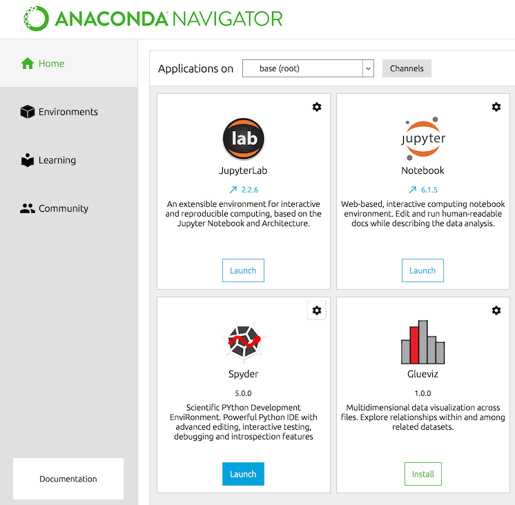
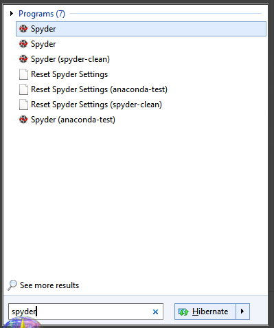
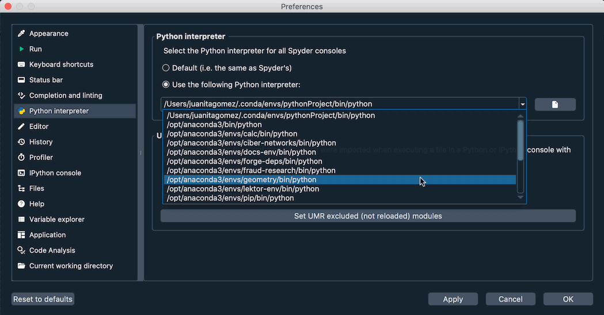
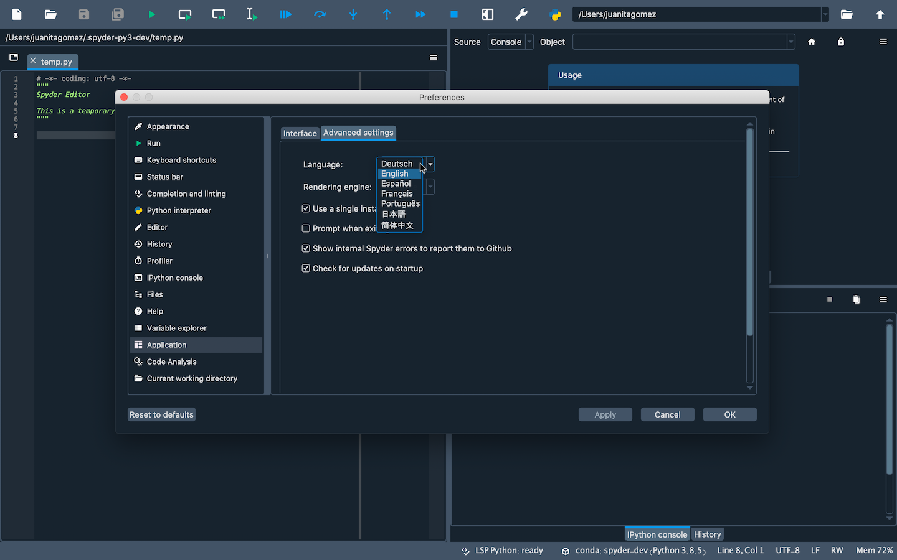
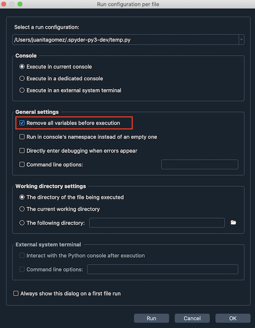
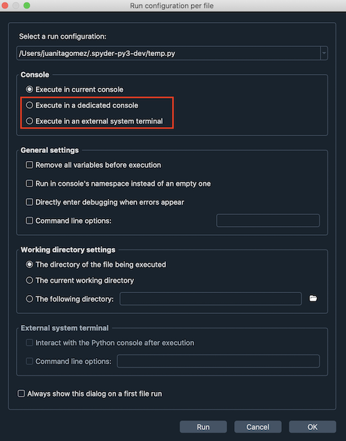
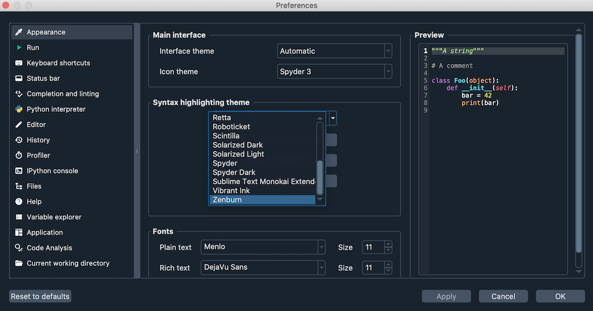

Preguntas frecuentes (FAQ)#
Instalar y actualizar#
P: ¿Cómo puedo instalar Spyder?
La forma más fácil de instalar Spyder es con la distribución de Anaconda Python, que viene con todo lo que necesitas para empezar con un paquete todo en uno. Descárgalo de su página web.
Para más información, visita nuestro Guía de instalación.
P: ¿Cómo puedo instalar Spyder en el Windows Subsystem for Linux 2 (WSL2)?
Si ya has instalado Spyder en tu equipo Windows, no necesitas reinstalarlo en un entorno Linux basado en WSL2 si el código debe ejecutarse allí.
En su lugar, simplemente instala Miniconda dentro de WSL2 y crea un nuevo entorno conda o también puedes usar un conda o virtualenv existente. Luego instala Spyder-Kernels en ese entorno con, por ejemplo, conda install spyder-kernels. Debes instalar manualmente ipython_genutils con, por ejemplo, conda install ipython_genutils.
Nota
Windows crea una ruta de red ubicada en \\wsl$ que apunta a las particiones de sus máquinas WSL2, por ejemplo, \\wsl$\Ubuntu-20. 4. Debes mapear una letra de unidad de red a la ruta de su máquina, por ejemplo W:, para que Spyder vea correctamente sus archivos y carpetas.
Para iniciar un kernel de Spyder, desde tu terminal Linux ejecuta
python -m spyder_kernels.console --matplotlib="inline" --ip=127.0.0.1 -f=~/remotemachine.json &
Esto ejecutará el kernel como un subproceso y creará un archivo llamado remotemachine.json en su carpeta de inicio WSL.
Finalmente, bajo el menú de opciones de Spyder Terminal de IPython, selecciona Conectarse a un núcleo existente como se describe en Usar núcleos externos. Inserta la ruta absoluta de remotemachine.json en el campo de Archivo de conexión. Si has mapeado W:, como se menciona en la nota anterior, la ruta debería ser W:/home/username/remotemachine.json. Una nueva consola se abrirá en Spyder, corriendo en el entorno Linux. Intenta ejecutar os.system('ls -la') y observa si se lista tu carpeta de inicio WSL. Si ejecutas exit() desde Spyder, se detendrá el núcleo corriendo en Linux.
P: ¿Cómo puedo actualizar Spyder utilizando conda?
Desde la línea de comandos (o el prompt de Anaconda en Windows), ejecuta:
conda update anaconda
conda update spyder
Si esto da como resultado un error o no actualiza Spyder a la última versión, intenta:
conda install spyder=5
Lanzar Spyder#
P: ¿Cómo puedo ejecutar Spyder?
Puedes lanzarlo de cualquiera de las siguientes formas:
Desde la línea de comandos: Escribe
spyderen tu terminal (o en el Anaconda prompt en Windows).Desde Anaconda Navigator: desplázete hasta Spyder en Home, y haz clic en Launch.
*Solo para Windows*: Lánzalo a través del acceso directo al menú Inicio.

P: ¿Puedo ensayar Spyder sin instalarlo?
P: ¿Cuáles son los requisitos del sistema para Spyder? ¿Qué tan intensivo es su uso de recursos?
Spyder funciona con versiones modernas de Windows, macOS y Linux (ver la tabla de abajo para ver las versiones recomendadas) mediante Anaconda, así como con otros métodos. Normalmente usa una CPU relativamente mínima cuando está inactiva, y 0.5 GB - 1 GB de RAM, dependiendo del tiempo que lo has estado usando y cuántos archivos, proyectos, paneles y consolas que has abierto. Debería funcionar en cualquier sistema con un procesador de núcleo dual o mejor con x64, y al menos 4 GB de RAM, aunque 8 GB es altamente recomendado para un mejor rendimiento al ejecutar otras aplicaciones. Sin embargo, el código que ejecutas, como la computación científica y los modelos de aprendizaje profundo, puede requerir recursos adicionales más allá de esta línea base para Spyder mismo.
Sistema operativo |
Versión |
|---|---|
Windows |
Windows 8.1 |
macOS |
High Sierra (10.13) |
Linux |
Ubuntu 16.04 |
P: ¿Cómo puedo ejecutar Spyder en un entorno de conda usando la línea de comandos?
Activa tu entorno conda escribiendo lo siguiente en tu terminal (o en el Anaconda Prompt en Windows):
conda activate <ENVIRONMENT-NAME>
Luego, escribe spyder para lanzar la versión instalada en ese entorno.
Usar Spyder#
P: ¿Cómo puedo instalar paquetes de Python para usar en Spyder si fue instalado con conda?
El primer método para instalar un paquete debería ser usar conda. En tu terminal del sistema (o en el Anaconda Prompt en Windows), escribe:
conda install <PACKAGE-NAME>
Si la instalación no se ha realizado correctamente, sigue los pasos 3 a 5 de la Parte 2 en nuestro vídeo sobre la resolución y prevención de problemas con pip, Conda y Conda-Forge.
P: ¿Cómo hago que Spyder funcione con mi entorno o paquetes de Python existentes?
Para trabajar con un entorno existente en Spyder, cambia el intérprete predeterminado de Python para las nuevas Terminal de IPython para que apunten a este entorno.
Para hacerlo, abre la sección intérprete de Python de las preferencias de Spyder (, o en macOS). Aquí, selecciona la opción Usar el siguiente intérprete, y utiliza el menú desplegable de abajo para seleccionar tu entorno preferido. Si no está listado, consulta la nota debajo de.
Nota
Si instalaste Miniconda (u otra distribución basada en Conda) en una ruta no predeterminada, o estás usando un entorno virtual administrado por una herramienta que no sea pyenv, es probable que los entornos no aparezcan en la lista.
En su lugar, utiliza el cuadro de texto o el botón Seleccionar archivo para ingresar la ruta al intérprete de Python que deseas utilizar. Puedes encontrar esta ruta activando el env o la env de Conda que deseas usar en tu terminal (Anaconda Prompt en Windows), y ejecutando el comando:
python -c "import sys; print(sys.executable)"
Finalmente, haz clic en Reiniciar el núcleo en el menú Consolas para que este cambio surta efecto. Si spyder-kernels no está instalado, el Terminal de IPython te mostrará instrucciones sobre cómo instalar la versión correcta. Ejecuta el comando dado en tu terminal (Anaconda Prompt en Windows) con el entorno activado, y finalmente reinicia el núcleo una vez más.
P: ¿Cómo puedo instalar paquetes de Python para usarlos en Spyder si descargué los instaladores independientes?
Ve nuestro vídeo sobre el uso de paquetes adicionales o sigue las instrucciones que aparecen a continuación.
Si quieres usar otros paquetes en Spyder que no vienen con nuestro instalador, necesitas tener tu propia distribución de Python instalada; recomendamos Miniconda u otra opción basada en Conda. Para que Spyder lo reconozca automáticamente, debes utilizar una distribución basada en Conda con su ruta de instalación predeterminada.
Crea un nuevo entorno conda que contenga spyder-kernels y los paquetes que quieres usar. Por ejemplo, si deseas usar scikit-learn, abre tu terminal (o Anaconda Prompt en Windows) y ejecuta el siguiente comando:
conda create -n my-env -c conda-forge spyder-kernels scikit-learn
Finalmente, conecta Spyder al entorno my-env cambiando el intérprete predeterminado de Python de Spyder, siguiendo las instrucciones en la respuesta anterior.
P: ¿Cómo restauro las preferencias de Spyder a sus valores por defecto?
Puedes usar el Restablecer Spyder a su configuración por defecto bajo Herramientas en la barra de menú de Spyder; el acceso directo del menú de inicio Reset Spyder settings (Windows), o ejecuta spyder --reset en tu terminal del sistema (Anaconda Prompt en Windows).
P: ¿Cómo puedo cambiar el lenguaje de Spyder?
En Aplicación en las Preferencias de Spyder, ve a la pestaña Opciones avanzadas y selecciona tu idioma de las opciones que se muestran en Lenguaje.
P: ¿Cómo puedo usar las celdas de código en Spyder?
Para crear una celda en el Editor de Spyder, escribe #%% en tu script. Cada #%% hará una nueva celda. Para ejecutar una celda, presiona Shift-Enter (mientras tu cursor está centrado en la celda) o usa el botón Ejecutar la celda actual en la barra de herramientas de Spyder.
P: ¿Cómo puedo usar plugins en Spyder (por ejemplo, Spyder-Notebook, Spyder-Terminal, Spyder-Unittest)?
Los plugins de Spyder están disponibles en el canal conda conda-forge. Para instalar uno, escribe en la línea de comandos (o en el Anaconda Prompt en Windows):
conda install -c conda-forge <PLUGIN>
Reemplaza <PLUGIN> con el nombre del plugin que quieres usar. Para más información sobre un plugin específico, ve a su repositorio:
P: ¿Cómo puedo eliminar todas las variables antes de ejecutar mi código?
Revisa la opción Eliminar todas las variables antes de la ejecución en el diálogo Configuración por archivo… bajo el menú Ejecutar.
P: ¿Cómo puedo ejecutar mi código en una terminal dedicada o en una consola del sistema externa?
Seleccione la opción apropiada en el diálogo Configuración por archivo… bajo el menú Ejecutar.
P: ¿Cómo puedo cambiar el tema de coloreado de sintaxis en el Editor?
Ve a Preferencias y selecciona el tema que quieras bajo el tema Tema de coloreado de sintaxis en la sección Apariencia.
Solución de problemas#
P: He encontrado un error o problema en Spyder. ¿Qué puedo hacer?
Primero debes seguir los pasos en nuestra guía solución de problemas. Si no puedes resolver tu problema, abre un «issue» siguiendo las instrucciones de nuestra sección Enviar un reporte.
P: ¡Tengo un error en la terminal IPython al ejecutar mi código! ¡Ayuda!
Primero, asegúrate de que el error que estás viendo no es un error en tu código. Para confirmar esto, intenta ejecutarlo en cualquier intérprete estándar de Python. Si el error persiste, es probable que el problema esté en el código y un sitio como Stack Overflow podría ser el mejor lugar para empezar. De lo contrario, empieza por la sección Primera ayuda básica de nuestra guía de solución de problemas.
P: El completado de código o la ayuda no funcionan; ¿qué puedo hacer?
Si no se muestra nada en el calltip, pase el cursor o usa el panel Ayuda, asegúrate de que el objeto que estás inspeccionando tiene un docstring, y prueba a ejecutar tu código en el Terminal de IPython para obtener ayuda y completar el código allí. Si esto no funciona, prueba a reiniciar PyLS haciendo clic derecho en la etiqueta LSP Python en la barra de estado en la parte inferior de la ventana principal de Spyder, y seleccionando la opción Reiniciar el Servidor de lenguaje de Python.
Para obtener más información, ve a la sección El autocompletado o la ayuda no funcionan en la página Problemas comunes de nuestra solución de problemas.
P: Recibí el mensaje «Ocurrió un error mientras iniciaba el núcleo». ¿Cómo puedo arreglarlo?
Primero, asegúrate de que tu versión de Spyder-Kernels es compatible con la de Spyder. Revisa la tabla en la sección Spyder-Kernels no está instalado o es incompatible de la guía de solución de problemas para comprobar.
Para instalar la versión correcta, escribe lo siguiente en la línea de comandos (o Anaconda Prompt en Windows)
conda install spyder-kernels=<VERSION>
Para obtener más información, ve a la sección Errores al iniciar el núcleo en la página Problemas comunes de nuestra solución de problemas.
P: Spyder no arranca o es lento en macOS Big Sur. ¿Cómo puedo hacer que funcione bien?
Spyder está en las etapas finales de ser actualizado para total compatibilidad con macOS 11 Big Sur, que se publicará a finales de 2020 como parte de la versión 4.2.1. Sin embargo, puedes ponerlo en marcha ahora mismo con la solución a continuación. Asegúrate de tener la distribución Anaconda o Miniconda instalada, y ejecutar los siguientes comandos en la Terminal para instalar Spyder desde Conda-Forge en un entorno limpio:
conda create -n spyder-dev python=3 conda activate spyder-dev conda install -c conda-forge spyder
Entonces, cada vez que quieras iniciar Spyder, ejecuta lo siguiente desde la Terminal:
conda activate spyder-dev
export QT_MAC_WANTS_LAYER=1
spyder
Acerca de Spyder#
P: ¿Cuál es la situación de licenciamiento de Spyder? ¿Está permitido su uso comercial?
Spyder es 100% gratuito y de código abierto; no hay ninguna versión de pago ni prohibición sobre el uso comercial. Es desarrollado por su comunidad internacional de usuarios, y soportado por sus usuarios a través de OpenCollective y por sus generosas organizaciones patrocinadoras, incluyendo Quansight y NumFOCUS. Nuestro código fuente, instaladores independientes y la mayoría de nuestros métodos de distribución (Pip/PyPI, distribuciones Linux, MacPorts, WinPython, etc) pueden ser libremente redistribuidos, utilizados y modificados por cualquier persona, para cualquier propósito, incluyendo uso comercial. Para más detalles sobre la situación con Anaconda, vea esa pregunta.
P: ¿Qué significan los cambios de licenciamiento de Anaconda para Spyder?
Si usas Spyder con la distribución Anaconda, ellos recientemente cambiaron (recently changed) sus términos de servicio (Terms of Service) para añadir restricciones a grandes empresas (> 200 empleados) con fines de lucro que utilizan Anaconda a gran escala. Sin embargo, estos términos solo aplican a la infraestructura de paquetes (la distribución completa de Anaconda y el canal conda defaults). En su lugar, puedes descargar la distribución Miniforge (Miniforge distribution) que es 100% de código abierto e idéntica a Anaconda (aparte de no incluir los paquetes de Python instalados por defecto en el entorno base de Anaconda, que recomendamos que evites usar de todos modos dado que cualquier problema puede romper tu instalación). Luego, simplemente instala los paquetes que necesitas (incluyendo Spyder, si no estás usando nuestro Instaladores independientes recomendado) con conda como lo haces normalmente. Miniforge utilizará automáticamente el repositorio Conda-Forge mantenido por la comunidad, que tiene una variedad de paquetes mucho más amplia y generalmente está más actualizada que el equivalente de Anaconda, además de estar libre de cualquier restricción comercial. Para más información, visita nuestra Guía de instalación.